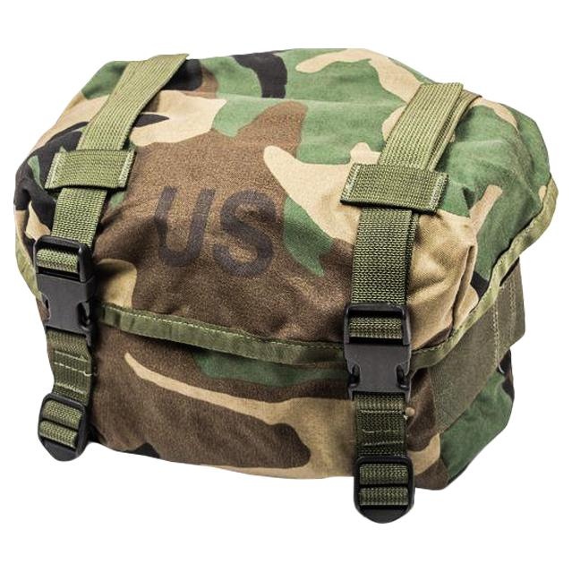
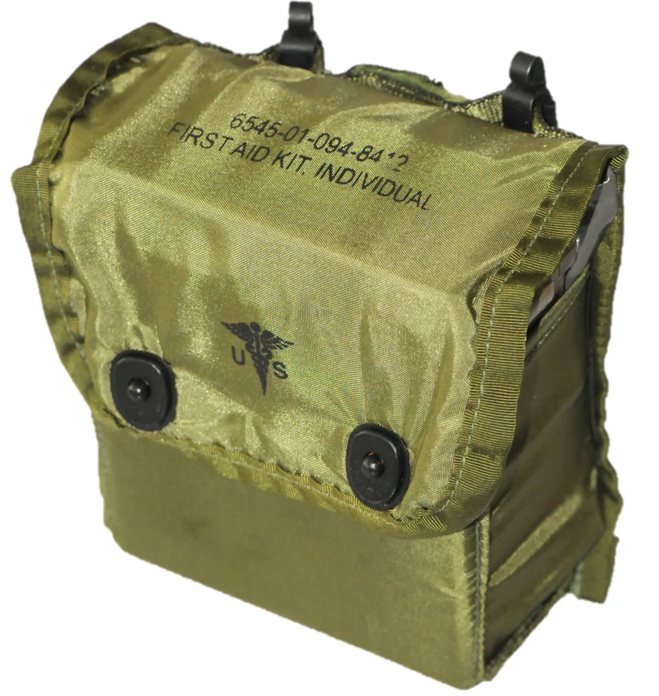
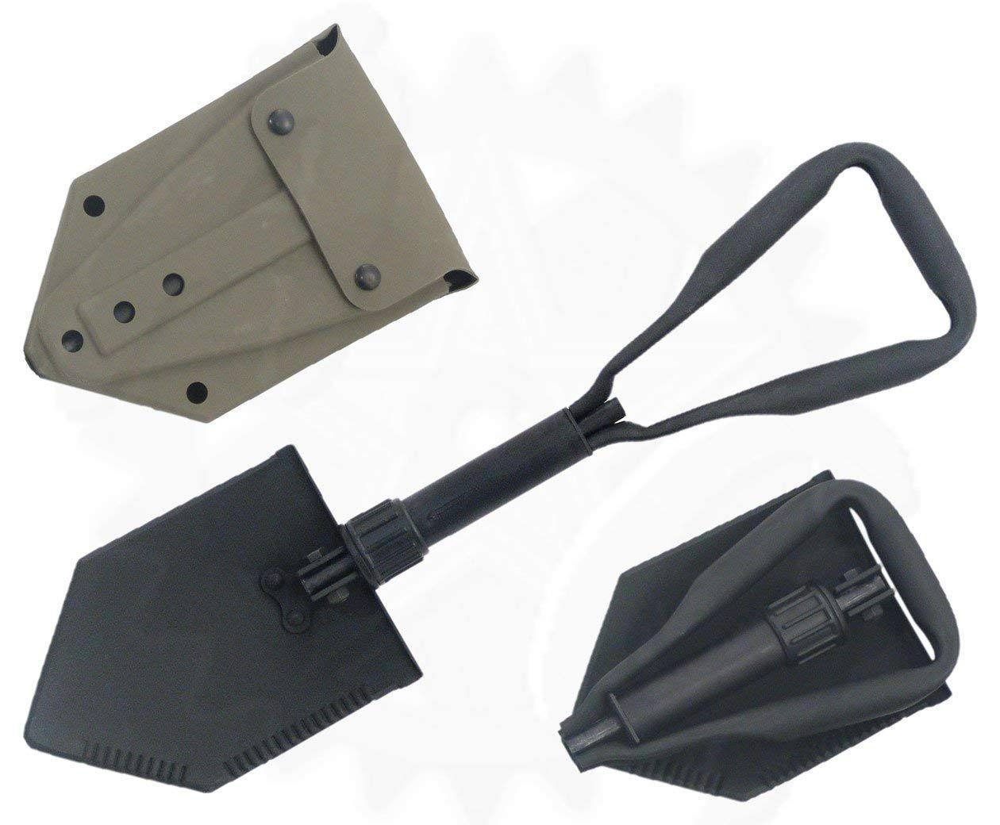

While we have mentioned various pouches and accessories, this will be an overall list of all equipment pouches that are encompassed in the ALICE LC-2 system and a brief overview of their intended purpose, so that you may decide which ones will fill the role or purpose you need. We will only cover fighting load equipment as the existence load is a separate item that is intended to be used separately, usually worn over the fighting load and should be removed before entry into combat if possible.
Pouches for the LC-2 fighting load
- Carrier, Entrenching Tool. This holds your entrenching tool or E-Tool and is to be used for digging foxholes or other forms of cover such as trenches
- Case, field first aid dressing/compass pouch. This little pouch is intended to hold a single first aid dressing or bandage or the standard issue compass, which is still standard issue to this day.
- Case, Small Arms Ammunition. This is the most important pouch and holds three 30 round magazines of the 5.56mm STANAG magazines for use in the M16 and M4 pattern of rifles. They will also hold two fragmentation grenades. Always have two of these at least on your belt
- Cover, water canteen. Have at least two of these as well, but these hold your canteens and water purification tablets. it should be noted that you can carry magazines in here, this is generally not advised.
- First Aid Kit, Individual. A one person first aid kit that when used properly can save your life
- Case, Small Arms 200 round. Intended for the M249 SAW light machine gun holding a single belt of 200 rounds of 5.56mm ammunition on a disentigrating link system. This pouch is more suited as a genral purpose or dump pouch in civilian hands
The butt pack is a complicated one as there was none officially adopted by the US Armed Forces, at least initially. The original plan was to use the existing M1956, M1967, and other versions like the M1961. However in the 1990's the training butt pack was introduced in a woodland coloration. Your best bet is to go for these training packs as they are both cheaper than the original M1967 nylon packs, made of better materials than the canvas M1956, and best of all, it uses modern ITW Fastex buckles to open and close the pack making it easier to use and it does have waterproofing capabilies, but I would still have a dry bag within the pack for more watersensitive items just to be safe.
Use of Pistols and body armor with the Alice System
Pistols or handguns are not always issued to basic soldiers, but for civilians/militia use, pistols are an important piece of kit, aside from your rifle. However, there is only two holsters that will work with this system. The old M1916 holsters for the M1911 and M1911A1 .45 Auto pistols which were in service for both world wars, korea, and vietnam are the first one, but unless you go aftermarket you are stuck with a right handed draw. This brings us the M12 or the UM84 holster designed by bianchi. It can be set up for either left or right handed draw. While it is primarily intended for the US M9 beretta pistol, the 1911A1, Sig P226, and most other full size semi auto pistols with a five inch barrel will fit. Pouches for spare magazines are a different story and include the
- M1956 two mag 1911 pouch
- M1967 two mag 1911 pouch
- any US M1911 pistol magazine pouches using M1910 hangars
- 9mm ammunition pouch, this holds a single 15 round M9 magazine or similar sized mags
- Bianchi M1025 (two mag) or M1030 (four mag) pouch. Will fit either double stack or single stack magazines
The reason there is a bit of confusion is that in 1985 the US Military adopted the beretta M9 pistol right in the middle of the alice systems service life. Despite this, the M1911A1 remained in limited service, especially in special forces and the marine corps so both at times did serve side by side such as the previously mentioned battle of Mogadishu. Body Armor is another issue. Only Pasgt vests, and the Ranger Body Armor (RBA) were designed to be used with alice in mind, however any slick armor carrier or body armor under the clothing will do the trick. Caution, the PASGT vest is a fragmentation vest only, it is not rated to stop ballistic threats, only shrapnel. The Ranger Body Armor is quite rare to find and most clones of it are not of service grade quality.
Photo Gallery
Butt Pack
First Aid Kit
Entrenching tool with rubber carrying pouch